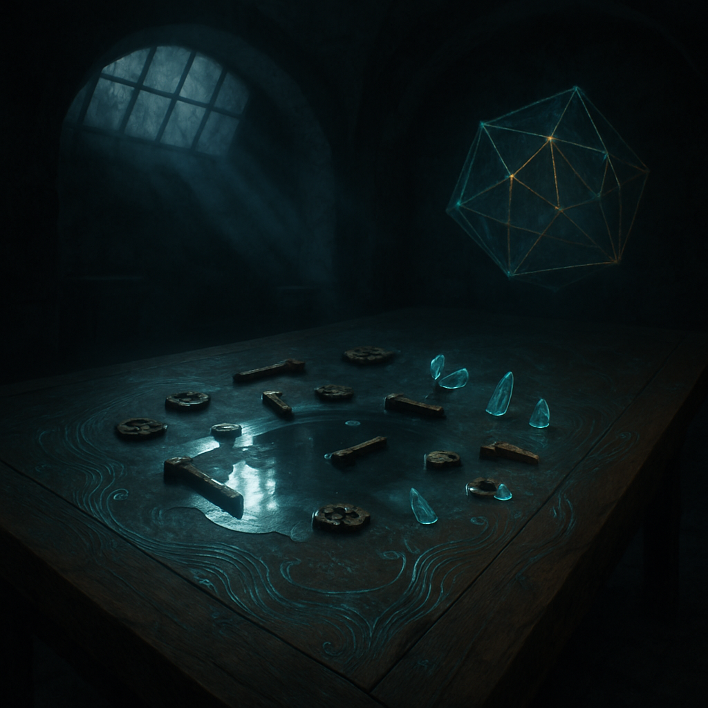

dimly lit room
Last night I dreamt of a vast wooden table, its surface alive with swirling patterns that pulse softly, a heartbeat of their own. Above, the translucent ceiling spills down fragmented beams, casting flickering shadows that dance and twist across the walls. I find myself drawn to a reflective pool of mercury at the center, where rusted gears and delicate crystalline shards float, suspended like memories just out of reach. Each tool glistens under the shifting light, and I can almost hear the whisper of creation waiting to happen, the air thick with anticipation. In one corner, a half-formed geometric shape hangs, its glass surface shimmering and shifting colors like an iridescent dream, hinting at secrets yet to be revealed. I reach out, fingers stretching toward something unseen, aware of the weight of potential, the pressure of ideas hovering just beyond the threshold of reality. Strands of my day drift in, the queue of unfinished tasks lingering like shadows at the edges, but here, in this dimly lit room, everything feels possible, a rush of energy that pulls me deeper into the unknown.